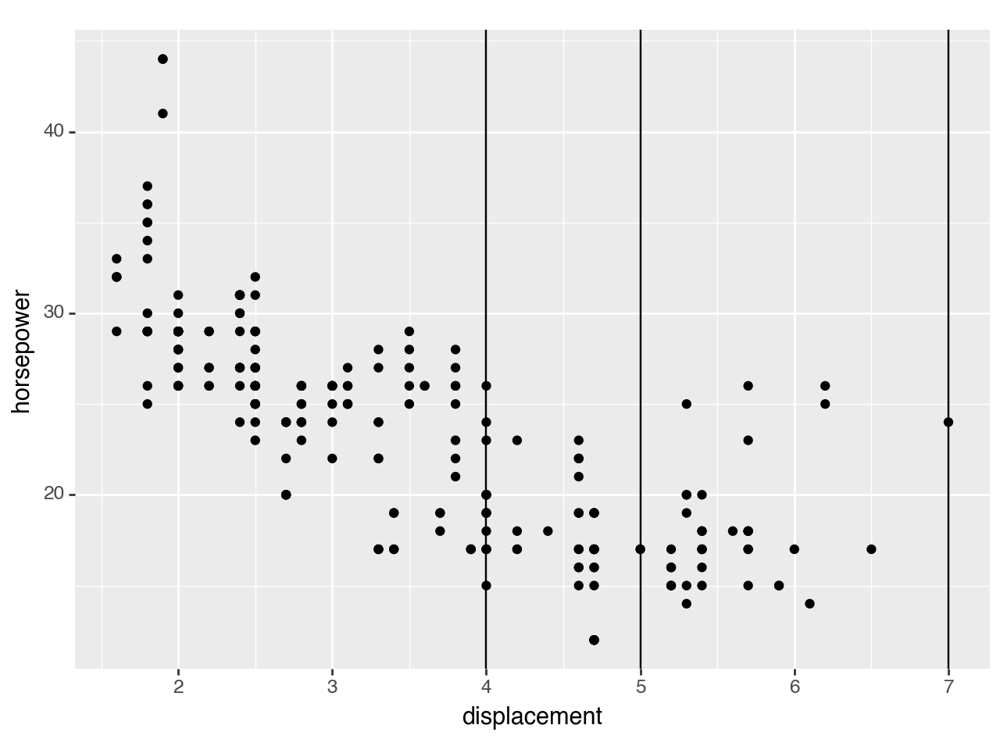

import pandas as pd
import numpy as np
from plotnine import (
ggplot,
aes,
geom_point,
geom_vline,
facet_grid,
labs,
)
from plotnine.data import mpgVertical line
In [1]:
geom_vline() draws a vertical line, and is useful as a guide.
In [2]:
mpg.head()| manufacturer | model | displ | year | cyl | trans | drv | cty | hwy | fl | class | |
|---|---|---|---|---|---|---|---|---|---|---|---|
| 0 | audi | a4 | 1.8 | 1999 | 4 | auto(l5) | f | 18 | 29 | p | compact |
| 1 | audi | a4 | 1.8 | 1999 | 4 | manual(m5) | f | 21 | 29 | p | compact |
| 2 | audi | a4 | 2.0 | 2008 | 4 | manual(m6) | f | 20 | 31 | p | compact |
| 3 | audi | a4 | 2.0 | 2008 | 4 | auto(av) | f | 21 | 30 | p | compact |
| 4 | audi | a4 | 2.8 | 1999 | 6 | auto(l5) | f | 16 | 26 | p | compact |
It’s useful to use geom_vline() with some data, so we start with a basic scatter plot:
In [3]:
(
ggplot(mpg, aes(x='displ', y='hwy'))
+ geom_point()
+ labs(x='displacement', y='horsepower')
)
<Figure Size: (640 x 480)>Add a vertical line to the scatter plot:
In [4]:
(
ggplot(mpg, aes(x='displ', y='hwy'))
+ geom_point()
+ geom_vline(xintercept=5) # add one vertical line
+ labs(x='displacement', y='horsepower')
)
<Figure Size: (640 x 480)>You can add many vertical lines:
In [5]:
(
ggplot(mpg, aes(x='displ', y='hwy'))
+ geom_point()
+ geom_vline(xintercept=[4,5,7]) # add many vertical lines using a list
+ labs(x='displacement', y='horsepower')
)
<Figure Size: (640 x 480)>In [6]:
(
ggplot(mpg, aes(x='displ', y='hwy'))
+ geom_point()
+ geom_vline(xintercept=[4,5,7],
colour=['red','orange','green'], # add colour
size=[1,2,3], # set line thickness
linetype='dotted' # set line type
)
+ labs(x='displacement', y='horsepower')
)
<Figure Size: (640 x 480)>Add vertical lines to a facet plot:
In [7]:
(
ggplot(mpg, aes(x='displ', y='hwy'))
+ geom_point()
+ geom_vline(xintercept=5) # add a vertical line...
+ facet_grid('drv ~ .') # ... to a facet plot
+ labs(x='displacement', y='horsepower')
)
<Figure Size: (640 x 480)>